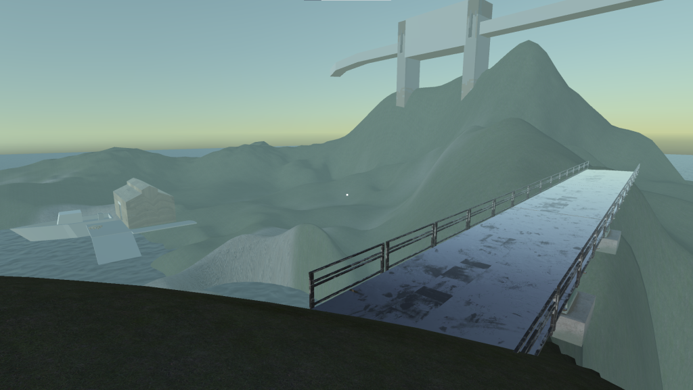
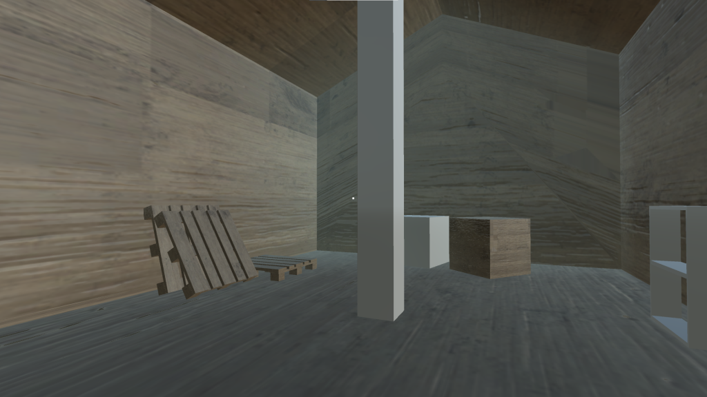
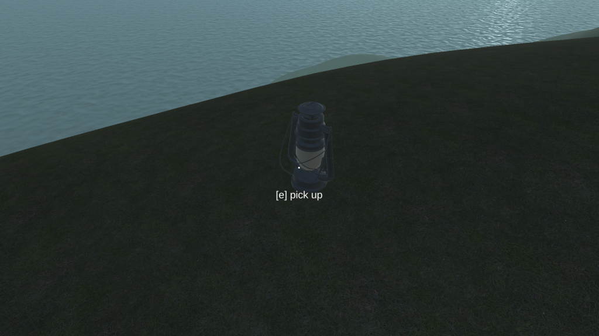

developed ~june 2022 A few months ago, I was developing this small first-person puzzle game where the goal was to light up the lighthouse. It was inspired by Portal and Half-Life 2's visuals. It's been a while since I've touched it because I realized I didn't like the type of game I was making that much. I did think a little about pivoting, but there's not much I want to do with the base I have. I want to work more in Unity sometime but I would make something more procedural instead of all content relying on manually modelled assets. reason for dropping: I realized I hated making assets. likelihood of returning: 0/5 Since the game kind of hinges on assets it's not gonna happen


The lighthouse.

The beginning of the inventory screen. The models of objects in your inventory could be spun around, to inspect them for clues. (Lamp model isn't mine)


